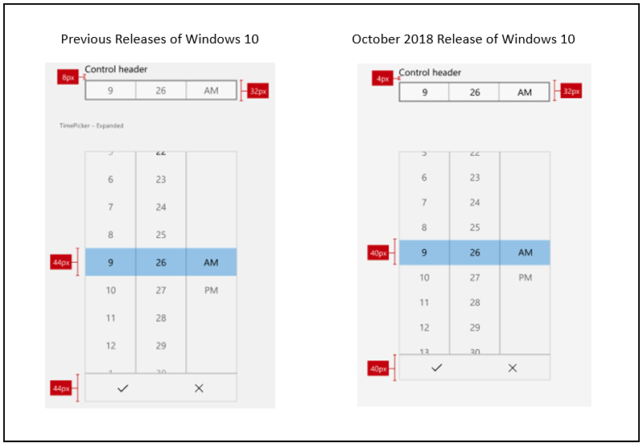
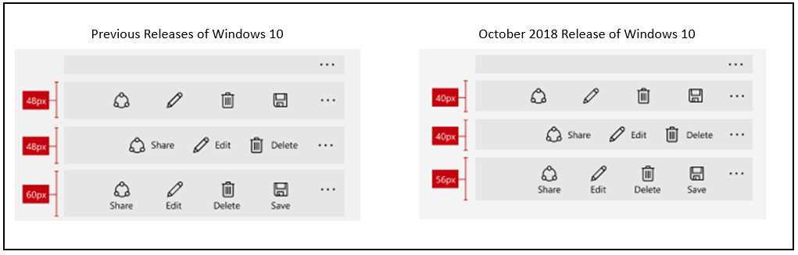

Control size and density
Use a combination of control size and density to optimize your Windows application and provide a user experience that is most appropriate for your app's functionality and interaction requirements.
By default, XAML apps are rendered with a low-density (or Standard) layout. However, beginning with WinUI 2.1, a high-density (or Compact) layout option, for information rich UI and similar specialized scenarios, is also supported. This can be specified through a basic style resource (see examples below).
While functionality and behavior has not changed and remains consistent across the two size and density options, the default body font size has been updated to 14px for all controls to support these two density options. This font size works across regions and devices and ensures your application remains balanced and comfortable for users.
Examples
Open the WinUI 3 Gallery app and see Spacing examples
Open the WinUI 3 Gallery app and see Compact Sizing in action
The WinUI 3 Gallery app includes interactive examples of most WinUI 3 controls, features, and functionality. Get the app from the Microsoft Store or get the source code on GitHub
Fluent Standard sizing
Fluent Standard sizing was created to provide a balance between information density and user comfort. Effectively, all items on the screen align to a 40x40 effective pixels (epx) target, which lets UI elements align to a grid and scale appropriately based on system level scaling.
Standard sizing is designed to accommodate both touch and pointer input.
Note
For more info on effective pixels and scaling, see Screen sizes and breakpoints
For more info on system level scaling, see Alignment, margin, padding.
Fluent Compact sizing
Compact sizing enables dense, information-rich groups of controls and can help with the following:
- Browsing large amounts of content.
- Maximizing visible content on a page.
- Navigating and interacting with controls and content
Compact sizing is designed primarily to accommodate pointer input.
Examples of compact sizing
Compact sizing is implemented through a special resource dictionary that can be specified in your application at either the page level or on a specific layout. The resource dictionary is available in the WinUI Nuget package.
The following examples show how the Compact style can be applied for the page and an individual Grid control.
Page level
<Page.Resources>
<ResourceDictionary
Source="ms-appx:///Microsoft.UI.Xaml/DensityStyles/Compact.xaml"/>
</Page.Resources>
Grid level
<Grid>
<Grid.Resources>
<ResourceDictionary
Source="ms-appx:///Microsoft.UI.Xaml/DensityStyles/Compact.xaml"/>
</Grid.Resources>
</Grid>
Sizing in Windows apps
In the Windows 10 October 2018 Update (version 1809 and later), the standard, default size for all Windows XAML controls was decreased to increase usability across all usage scenarios.
The following image shows some of the control layout changes that were introduced with the Windows 10 October 2018 Update. Specifically, the margin between a header and the top of a control was decreased from 8epx to 4epx, and the 44epx grid was changed to a 40epx grid.

This next image shows the changes made to control sizes for the Windows 10 October 2018 Update. Specifically, alignment to the 40epx grid.
